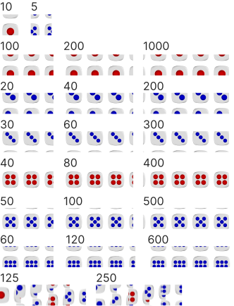

Правила игры в 1000 Dice
Все просто: В игре 5 костей. Кидаешь, считаешь, набираешь 1000 очков, забираешь банк. Есть результативные значения и комбинации, со своей стоимостью очков.
Комбинации
Начало игры
Все бросают по кругу. Кто больше, тот первый. Пока не будет различных значений.
Чтобы открыть свою игру, тебе нужно набрать «Золотой» 60 очков за один ход. Не набрал, ходит следующий. Когда набрал «Золотой» можешь записывать или бросать кости, на которых не выпали результативные очки или комбинации, если выпали все 5 костей, обязательно нужно «подтвердить», то есть оставит возможность еще одного броска (за исключением комбинации 1-5 и 2-6, они записываются сразу).
Еще раз: Если хочешь записать себе очки, то у тебя должна быть возможность свободного хода. То есть, если ты не можешь бросать кубики, так они все результативные, то для того, чтобы записать себе очки, ты должен бросить кубики еще раз. И если ни чего не выпало, то это БОЛТ. А если выпало, то можешь приплюсовать себе эти очки, и бросать еще раз.
Болты
Записываются тогда, когда не выпало ни одного результативного очка или комбинации. Набираешь 3 болта, в процессе игры, списывается 50 очков.
Если ты, по какой-то причине, будь то обгон или болт или коснулся 555 очков - это Самосвал - самосваливаешься в нуль. Но не беспокойся, «Золотой» набирать необходимости нет. Просто продолжай. Шансы всегда есть.
Ямы
2 диапазона. От 200 до 300 и от 600 до 700. Суть в том, что если ты в яме, то тебе нужно из нее выпрыгнуть. То есть за раз набрать количество очков до верхней границы. Записывай очки с умом.
Обгон.
Если ты набрал на 5 очков больше, чем есть у другого игрока - это Обгон. Минус 50 очков всем тем, кого обогнал. Если догнал игрока и встали вровень, ему нужно бежать, а тебе обгонять.
Бочки
Коснулся 900 очков - сел на бочку. Необходимо набрать больше 100 за 1 ход чтобы закончить игру. Не набрал - слетел с бочки - 60 очков. Слетел с бочки 3 раза – упал на ноль.
Если ты, по какой-то причине, будь то обгон или болт или коснулся 555 очков - это Самосвал - самосваливаешься в нуль. Но не беспокойся, «Золотой» набирать необходимости нет. Просто продолжай. Шансы всегда есть.